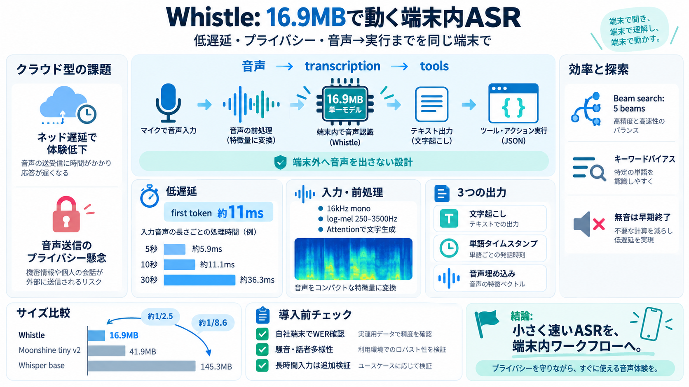

Moonshine: Speech Recognition for Live Transcription and Voice Commands
Whisper, which is based on an encoder-decoder transformer architecture, processes fixed-length audio sequences in 30-sec…

Whisper, which is based on an encoder-decoder transformer architecture, processes fixed-length audio sequences in 30-sec…
Word error rate, lower is better. A missing bar is a benchmark that model's authors never published: Moonshine is Englis…
Two benchmark caveats the maker discloses and most summaries will not. First, Whisper's numbers are the multilingual che…
# This Speech-to-Text AI Is Only 16.9 MB (Cactus Whistle) ## Channel: Prince does AI 1.12K subscribers 2 likes ### Desc…
Oct 2 4.31 WER on LibriSpeech test-clean and 10.49 on test-other, against 4.9 and 11.0 for Whisper base at 145.3MB. 2…